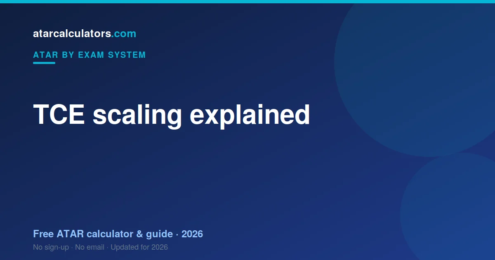

TCE scaling is the step where TASC adjusts each Level 3 and Level 4 subject so results from different subjects can be compared. Tasmania then adds your best five scaled scores in full to build a Tertiary Entrance Score out of 75. Scaling tracks how strong each subject's cohort was rather than how hard its content felt, and it never alters where you finished inside your own subject.
Key takeaways
- TASC scales every Level 3 and Level 4 subject before your TES is built.
- Tasmania counts your best five scaled scores in full, with no increments.
- A subject scales up when its cohort is academically strong, not when its content is hard.
- Scaling changes what a score is worth, never your rank inside the subject.
- The TES tops out at 75, a smaller scale than most states use.
- No subject combination beats simply ranking well in what you take.

What is TCE scaling?
Scaling is the conversion TASC applies to each subject so that a score in one subject carries the same meaning as the same score in another. It runs after your results are settled, on the way to your Tertiary Entrance Score.
Only Level 3 and Level 4 subjects produce scores that feed a TES, which is the first thing worth confirming about your own load. A subject that carries no ATAR weight cannot be scaled into one.
Why scaling exists
Tasmanian students take very different combinations of subjects, and those subjects attract different groups. Without a correction, a TES would partly record subject choice rather than achievement.
Scaling closes that gap. It lets TASC treat a student who sat Physics and one who sat a broad-entry subject on genuinely comparable terms.
How scaling works
TASC looks at how each subject's students performed across all of their subjects, not only the one being scaled. Consistently strong performers elsewhere lift their subject's scaling; a broader cohort moves it down.
The assessment is of the group. Your position within your own subject is set by your own score and does not move.
How much does scaling move a result?
How far a score shifts depends on the subject and the year. Tasmania's scale makes the arithmetic feel different: with a TES out of 75 rather than several hundred, a movement of a couple of points is a larger share of your total than the same movement would be elsewhere.
The mechanism is the same as every other state's. Only the size of the ruler has changed.
Subjects that scale up
In the TCE, Mathematics Methods, Chemistry and Physics scale strongly. The common factor is the intake: students who take these subjects tend to do well across their whole TCE.
The subject is not being credited for being hard. Its cohort is being recognised for being strong.
Subjects that scale down
Broad-entry subjects tend to scale down, along with some practical subjects. That describes who enrols, not the value of the subject.
It also does not make them poor choices. A subject that scales modestly still produces a strong scaled score if you rank near the top of it, and Tasmania counts five scores in full — so a strong result anywhere counts completely.
Why hard does not mean high-scaling
The idea that hard subjects scale up is almost right, which is why it endures. Demanding subjects frequently do scale up — but the difficulty is not the cause. The cohort is.
Give a hard subject a broad intake and it would scale down, with its content untouched.
A concrete scaling example
Picture two Tasmanian students with the same strong score. One sat a subject with a strong cohort, the other a broad-entry subject. After TASC scales them, the first score rises and the second eases back.
Neither was rewarded or punished. Each was measured against the students they actually sat with.
Should you choose for scaling or for results?
Choose for results. Tasmania counts five scaled scores in full, so a strong score in a modest scaler contributes completely — while a weak score in a strong scaler contributes weakly, whatever the subject's reputation.
Take subjects you can rank highly in. Scaling amplifies a good score; it cannot rescue a poor one.
Why scaling feels unfair but is not
It feels unfair that a score can move after you have finished, based on a cohort you did not pick. That is a reasonable reaction.
But the alternative is worse. Without scaling, a Tasmanian TES would reward students for choosing convenient subjects rather than for doing well. Scaling is what stops that.
Does scaling change each year?
Yes. TASC recalculates scaling each year against that year's cohorts, so a subject's treatment moves a little between years. The broad pattern holds; the precise figures do not.
Selecting subjects from last year's table means planning with data that will not apply to your cohort.
Scaling in one idea
Scaling answers one question: how strong was the group that took this subject? In Tasmania that answer is then applied to five scores, added in full, and read against a scale that stops at 75.
Estimate your ATAR
You can watch this happen on your own numbers. Our TCE ATAR calculator scales each score, keeps your best five, and shows the TES out of 75 that results. For a single subject, the scaling calculator shows how one mark converts.
Scaling and English
English is scaled like any other subject: against the strength of its own cohort. No English subject is granted a fixed advantage.
Your rank within the English subject you take is what carries through.
Small-cohort subjects and scaling
Tasmania is a small state, and small cohorts are common. This does not break scaling and it does not create an exploit.
TASC scales a small subject exactly as it scales a large one, by examining how its students performed elsewhere. A small subject with a strong intake scales up; a small subject with a broad intake does not. Size alone decides nothing.
Scaling and your best results
Your best five scaled scores are added in full to build the TES, with no tapering and no partial contributions. Everything past the fifth is set aside.
Because scaling determines which five are your best, it can quietly change which subjects make the cut, not just what they are worth.
Check how any subject scales
Instead of relying on hearsay, check a subject directly. Run your own scores through the TCE ATAR calculator to see the real size of the effect on your TES.
Scaling is not the only factor
Scaling is not the only thing that matters. Level 3 and Level 4 status decides whether a subject counts at all, and individual courses set their own prerequisites regardless of scaling.
A strong TES will not admit you to a course whose prerequisite you never took.
The takeaway on scaling
Scaling reflects the strength of your subject's cohort, and nothing about you personally. You cannot outsmart it. Rank as high as you can in five subjects you can genuinely perform in, and the TES takes care of itself.
Common questions
What is TCE scaling and why does it exist?
TCE scaling adjusts each subject so results can be compared fairly across different subjects. It exists so your ATAR reflects your ability, not just your subject choice, since some subjects attract stronger cohorts than others.
Do harder subjects scale higher?
Not automatically. Scaling reflects how strong a subject’s cohort is across all subjects, not how difficult the content is. A hard subject with a mixed cohort can scale modestly.
How much does scaling move a mark?
It varies by subject. A strong-scaling subject can lift a result, while a broad-entry subject can lower it a little. The effect is larger for the strongest-scaling subjects.
Does scaling change each year?
Yes. Scaling is recalculated each year based on that year’s cohorts, so a subject’s scaling can shift slightly. The broad pattern is stable, but the exact figures change.